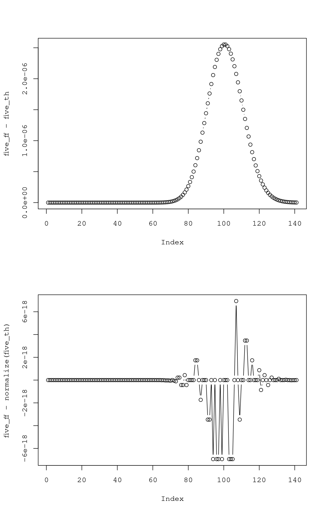
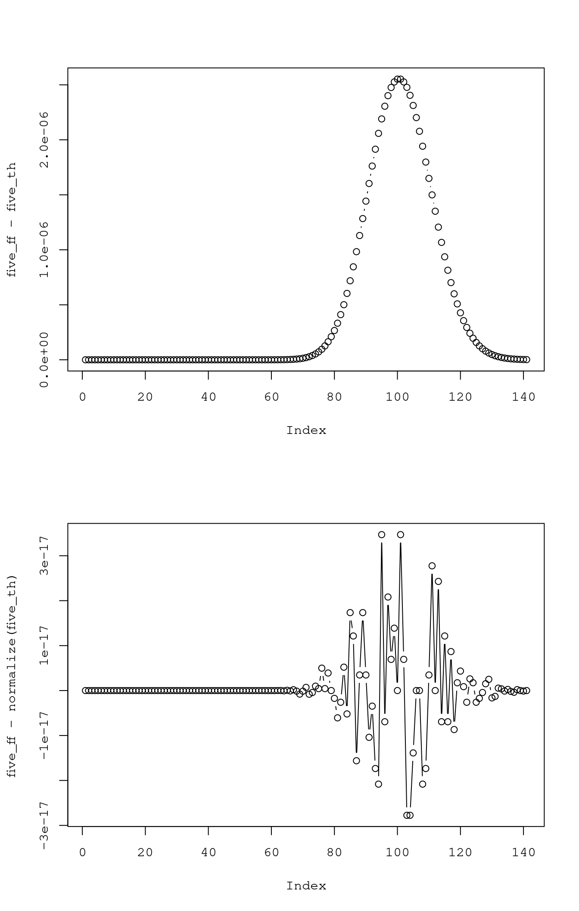
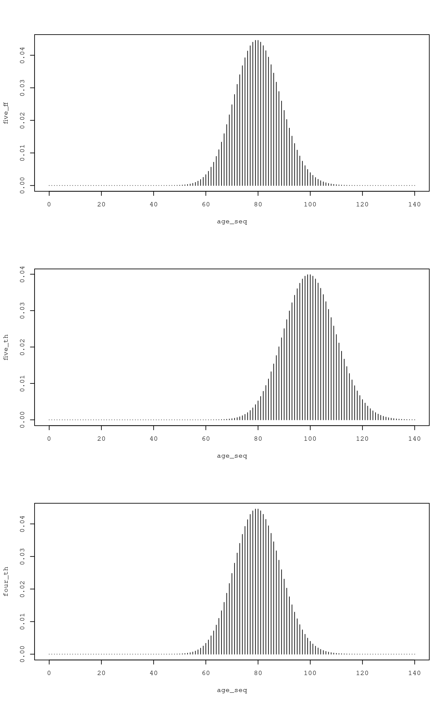
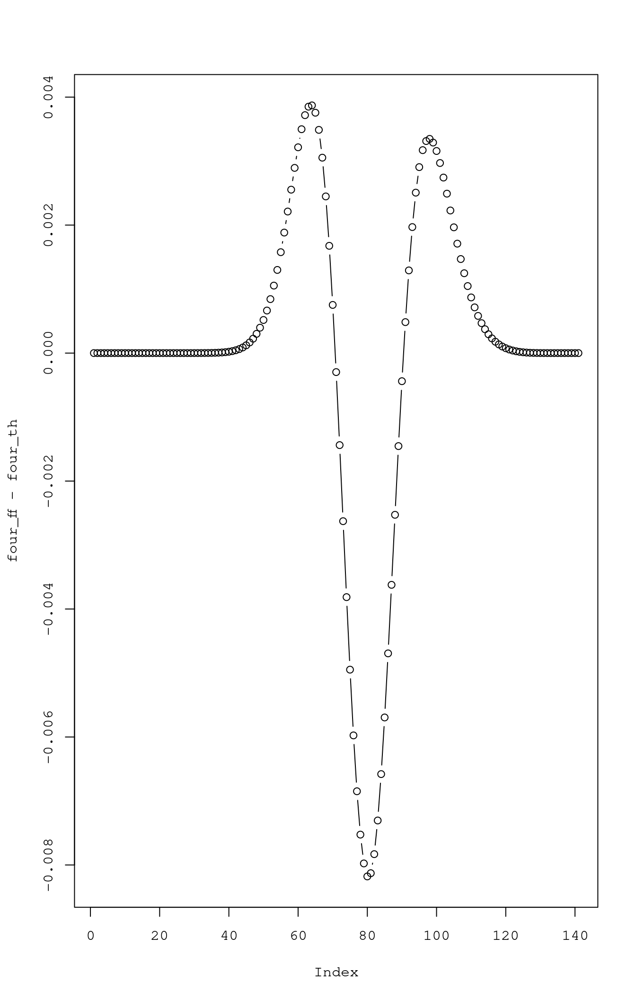

Exploring the Poisson Process for age-depth models
R
schron
poisson process
chronologies
Author
Rodrigo M. Vega
Published
November 12, 2021
Note
Check ggdist package for plotting distributions
Here we will explore the poisson process as a prior to model age-depth relations. The goal is to be able to add 14C data one at a time, and adjust the posterior set of chronologies accordingly.
This is what we need:
compute age probability distribution for any depth unit conditional on the age of the previous depth unit or the age of the next depth unit
do this for each possible age in the unit we are conditioning on, scale the probabilities by the probability of that particular age
sum all resulting distributions (age-wise) and normalize
compare this distribution to the theoretical distribution from a poisson process
do the same using a calibrated 14C age distribution times the poisson prior
If this works fine we could propagate the 14C uncertainty up and down the age model without recurring to MCMC sampling.
Five from four - first attempt
Let’s try with a simple poisson process and see if we can compute the distribution for time \(t=5\) from \(t=4\):
lambda =20n_depth =5grid_size = (n_depth * lambda +4*sqrt(n_depth * lambda))age_seq =0:grid_size# theoretical distributionsnormalize =function (x) x /sum(x)four_th =dpois(age_seq, lambda =4* lambda)five_th =dpois(age_seq, lambda =5* lambda)# five from fourfive_ff = { tmp =sapply(age_seq, function (x) {dpois(age_seq - x, lambda = lambda) *dpois(x, lambda =4* lambda) }) tmp =rowSums(tmp) tmp =normalize(tmp) tmp}rm(tmp)# plotopar =par(no.readonly =TRUE)par(mfrow =c(3, 1))plot(age_seq, five_ff, type ='h')plot(age_seq, five_th, type ='h')plot(age_seq, four_th, type ='h')
Differences are pretty small, all.equal wont consider them after normalization (output from dpois doesn’t add up to one):
par(mfrow =c(2, 1))# test equalityidentical(five_ff, five_th)
[1] FALSE
all.equal(five_ff, five_th)
[1] "Mean relative difference: 6.401264e-05"
all.equal(five_ff, normalize(five_th))
[1] TRUE
plot(five_ff - five_th, type ='b')plot(five_ff -normalize(five_th), type ='b')

Logspace
This seems more like a precission issue than an approximation one. Lets try using the logspace to deal with small numbers. We will first need a function to sum the log-probabilities instead of rowSums. I am taking this one form this stackoverflow answer. The function uses recursion to sum vectors. It expects a vector of log-probabilities:
# a function to sum log-probabilitieslog_sum =function (x) {if (length(x) ==1) return(x)if (length(x) ==2) return(max(x) +log1p(exp(-abs(diff(x))))) this = x[1:2] other = x[-c(1:2)] out =c(log_sum(this), other)return(log_sum(out))}
Now lets rewrite the whole computation using the log-probabilities instead:
# five from fourfive_ff = { tmp =sapply(age_seq, function (x) {dpois(age_seq - x, lambda = lambda, log =TRUE) +dpois(x, lambda =4* lambda, log =TRUE) }) tmp =apply(tmp, 1, log_sum) tmp =normalize(exp(tmp)) tmp}rm(tmp)# plotpar(mfrow =c(3, 1))plot(age_seq, five_ff, type ='h')plot(age_seq, five_th, type ='h')plot(age_seq, four_th, type ='h')
# test equalitypar(mfrow =c(2, 1))identical(five_ff, five_th)
[1] FALSE
all.equal(five_ff, five_th)
[1] "Mean relative difference: 6.401264e-05"
all.equal(five_ff, normalize(five_th))
[1] TRUE
plot(five_ff - five_th, type ='b')plot(five_ff -normalize(five_th), type ='b')

No difference… bollocks
Convolution (bad implementation?)
Lets use the convolution to get \(t=5\) as the sum of \(t=4\) and a poisson r.v. with \(\lambda = 1\):
five_ff =sapply(age_seq, function (x) {sum(dpois(x, lambda =4* lambda) *dpois(age_seq - x, lambda = lambda)) })# plotpar(mfrow =c(3, 1))plot(age_seq, five_ff, type ='h')plot(age_seq, five_th, type ='h')plot(age_seq, four_th, type ='h')

# test equalitypar(mfrow =c(2, 1))identical(five_ff, five_th)
[1] FALSE
all.equal(five_ff, five_th)
[1] "Mean relative difference: 1.418433"
all.equal(five_ff, normalize(five_th))
[1] "Mean relative difference: 1.418479"
plot(five_ff - five_th, type ='b')plot(five_ff -normalize(five_th), type ='b')
Melvin Dale’s convolution for discrete independent r.v.s
Now let’s try Melvin Dale’s (1979) version for discrete random variables. Let \(Z = X + Y\), all r.v.s with pmfs \(F_X; F_Y\) and where \(P(X = i) = a_i; P(Y = i) = b_i; P(Z = i) = c_i\)
five_ff =sapply(age_seq, function (x) {sum(dpois(0:x, lambda =4* lambda) *rev(dpois(0:x, lambda = lambda))) })# plotpar(mfrow =c(3, 1))plot(age_seq, five_ff, type ='h')plot(age_seq, five_th, type ='h')plot(age_seq, four_th, type ='h')
# test equalitypar(mfrow =c(2, 1))identical(five_ff, five_th)
[1] FALSE
all.equal(five_ff, five_th)
[1] TRUE
all.equal(five_ff, normalize(five_th))
[1] "Mean relative difference: 6.401674e-05"
plot(five_ff - five_th, type ='b')plot(five_ff -normalize(five_th), type ='b')
Same approximation now using the logspace:
five_ff = { tmp =sapply(age_seq, function (x) {log_sum(dpois(0:x, lambda =4* lambda, log =TRUE) +rev(dpois(0:x, lambda = lambda, log =TRUE))) })exp(tmp)}rm(tmp)# plotpar(mfrow =c(3, 1))plot(age_seq, five_ff, type ='h')plot(age_seq, five_th, type ='h')plot(age_seq, four_th, type ='h')
# test equalitypar(mfrow =c(2, 1))identical(five_ff, five_th)
[1] FALSE
all.equal(five_ff, five_th)
[1] TRUE
all.equal(five_ff, normalize(five_th))
[1] "Mean relative difference: 6.401674e-05"
plot(five_ff - five_th, type ='b')plot(five_ff -normalize(five_th), type ='b')
# reset graphical parameterspar(opar)
Again, bollocks… maybe these differences are not that important?
A realistic example
Let’s assume that the differences for the Melvin Dale in logspace approach are due to computational precission (this are the smallest) and explore how would this work for real data. At this point, we are only able to cumpute probabilities for following steps within the process (sums), yet we would need to be able to compute these backwards also. In order to do so we need to learn how to cumpute the probability distribution for a difference.
From Melvin Dale, the pdf of the difference \(Z = X - Y\) is also the fourier convolution of the pdfs \(F_X\) and \(F_Y\):
\[ P(Z = k) = \sum F_X(k + y)F_Y(y) \]
If we find an expansion form for this similar to the one we used for the sum of two r.v.s we should be ok. Following the same logic and taking advantage of the discreteness of the r.v.s, say \(Z = X - Y; P(X = i) = a_i; P(Y = i) = b_i; P(Z = i) = c_i\). Here we are thinking of each random variable as a colection of values and associated probabilities such that \(X = [x_0, x_1, ..., x_i, ..., x_n]; P(X = x_i = i) = a_i\). We want to sum the probabilities associated with each pair of values for \(X\) and \(Y\) that would yield a particular \(z_i\):
four_ff = { tmp =sapply(age_seq, function (x) {log_sum(dpois(x:grid_size, lambda =5* lambda, log =TRUE) +dpois(0:(grid_size - x), lambda = lambda, log =TRUE)) })exp(tmp)}rm(tmp)# plotpar(mfrow =c(3, 1))plot(age_seq, five_th, type ='h')plot(age_seq, four_ff, type ='h')plot(age_seq, four_th, type ='h')
# test equalitypar(opar)identical(four_ff, four_th)
[1] FALSE
all.equal(four_ff, four_th)
[1] "Mean relative difference: 0.195754"
all.equal(five_ff, normalize(five_th))
[1] "Mean relative difference: 6.401674e-05"
plot(four_ff - four_th, type ='b')

Seems like there is no way to estimate the previous step without incresing uncentainty… Maybe that’s ok, we shall try with a realistic example and see what happens.